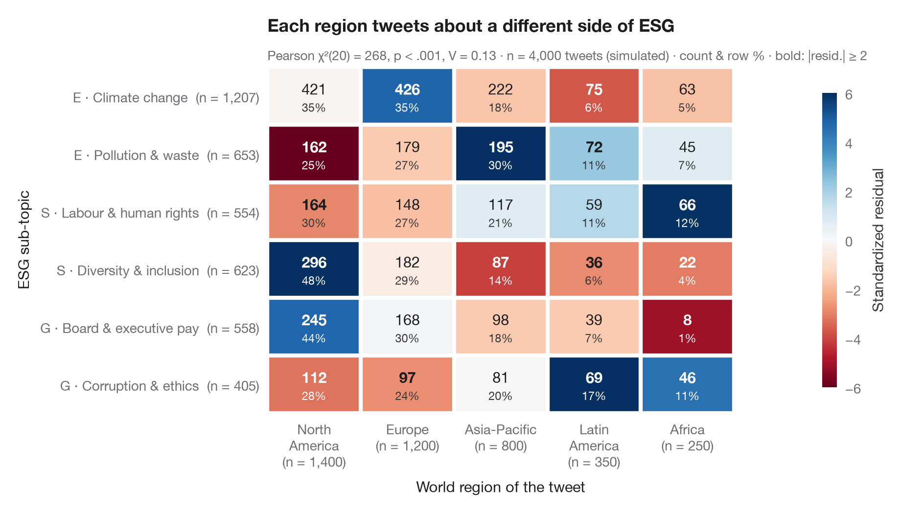

標準化残差付きクロス集計表
分割表をヒートマップとして描き、独立性からの標準化残差で色分けします。

ggstats::ggtable() の Python 版です。おなじみのクロス集計表ですが、各セルは 標準化（調整済み）残差、すなわち観測度数が独立性の仮定のもとでの予測値から標準誤差いくつ分上下にずれているかによって色分けされています。独立性のもとではこれらの残差はほぼ標準正規分布に従うため、±2 を超えるセル（太字で表示）が χ² 検定を有意にしているセルです。各セルには度数と行パーセントを表示し、周辺には合計を示しています。
データは statsmodels に同梱されている 1974年の Redbook 誌の調査（sm.datasets.fair）で、女性 6,366 人について信仰の度合いと自己評価による結婚生活の満足度を対比しています。期待度数は scipy.stats.chi2_contingency で求め、残差は (O − E) / √(E · (1 − row share) · (1 − column share)) です。
コードおよび図中のテキストは英語です。
import matplotlib.pyplot as plt
import numpy as np
import pandas as pd
import statsmodels.api as sm
from matplotlib.colors import TwoSlopeNorm
from scipy import stats
# Data: religiousness (rows) × marriage rating (columns)
df = sm.datasets.fair.load_pandas().data
rel = df.religious.map({1: "Not religious", 2: "Mildly", 3: "Fairly", 4: "Strongly"})
rate = df.rate_marriage.map({1: "Very poor", 2: "Poor", 3: "Fair", 4: "Good", 5: "Very good"})
table = pd.crosstab(pd.Categorical(rel, ["Not religious", "Mildly", "Fairly", "Strongly"]),
pd.Categorical(rate, ["Very poor", "Poor", "Fair", "Good", "Very good"]))
obs = table.to_numpy()
n = obs.sum()
# Chi-squared test and adjusted (standardized) residuals
chi2, p, dof, exp = stats.chi2_contingency(obs, correction=False)
row_share, col_share = obs.sum(1, keepdims=True) / n, obs.sum(0, keepdims=True) / n
std_resid = (obs - exp) / np.sqrt(exp * (1 - row_share) * (1 - col_share))
row_pct = obs / obs.sum(1, keepdims=True) * 100
v = np.sqrt(chi2 / (n * (min(obs.shape) - 1)))
fig, ax = plt.subplots(figsize=(9, 5))
norm = TwoSlopeNorm(0, vmin=-6, vmax=6)
im = ax.imshow(std_resid, cmap="RdBu_r", norm=norm, aspect="auto")
for i in range(obs.shape[0]):
for j in range(obs.shape[1]):
strong = abs(std_resid[i, j]) >= 2
ax.text(j, i - 0.12, f"{obs[i, j]:,}", ha="center", va="center", fontsize=11,
fontweight="bold" if strong else "normal",
color="white" if abs(std_resid[i, j]) > 3 else "#1D1D1F")
ax.text(j, i + 0.2, f"{row_pct[i, j]:.0f}%", ha="center", va="center", fontsize=8.5,
color="white" if abs(std_resid[i, j]) > 3 else "#3A3A3C")
# White gutters between cells and totals in the margins
ax.set_xticks(np.arange(-0.5, obs.shape[1]), minor=True)
ax.set_yticks(np.arange(-0.5, obs.shape[0]), minor=True)
ax.grid(which="minor", color="white", lw=3)
ax.grid(which="major", visible=False)
ax.tick_params(which="minor", length=0)
ax.set_xticks(range(obs.shape[1]), [f"{c}\n(n = {t:,})" for c, t in zip(table.columns, obs.sum(0))])
ax.set_yticks(range(obs.shape[0]), [f"{r} (n = {t:,})" for r, t in zip(table.index, obs.sum(1))])
for s in ax.spines.values():
s.set_visible(False)
ax.set_xlabel("Self-rated marriage quality")
ax.set_ylabel("Religiousness")
cb = fig.colorbar(im, ax=ax, shrink=0.85, pad=0.02, ticks=[-6, -4, -2, 0, 2, 4, 6])
cb.set_label("Standardized residual", color="#3A3A3C")
cb.outline.set_visible(False)
ax.set_title("Strongly religious women report the happiest marriages", pad=26)
ax.text(0, 1.02, f"Pearson χ²({dof}) = {chi2:.1f}, p < .001, Cramér's V = {v:.2f} · n = {n:,} · "
"count & row % · bold: |resid.| ≥ 2", transform=ax.transAxes,
fontsize=9.5, color="#6E6E73")
plt.show()
図にはオプションの PyStatlas スタイル を使用しています。同じ見た目にするには plt.style.use("pystatlas.mplstyle") を追加してください。
データの出典
- Redbook survey of married women, 1974 (Fair's affairs data). Fair, R. C. (1978). A theory of extramarital affairs. Journal of Political Economy, 86(1), 45–61. https://doi.org/10.1086/260646
Data from the 1974 Redbook magazine survey; distributed with statsmodels (sm.datasets.fair) with the author's permission.
これらの例は統計手法を説明するためのものです。図のタイトルは、この特定のデータ（多くは小規模で、古く、部分的な標本）で図が示す内容を述べたものであり、実質的な問いに対する著者の立場ではありません。解釈、背景、データの質については、ここに挙げた元の出典を参照してください。
引用方法
PyStatlas は Thierry Warin が作成・運営しています。研究や業務に役立った場合は、ぜひ引用してください。
Warin, T. (2026). Cross-table with standardized residuals. In PyStatlas: The Python Gallery of Statistical Graphics for the Social Sciences. https://warint.github.io/pystatlas/proportions-surveys/crosstab-residuals/
@misc{warin2026statlas,
author = {Warin, Thierry},
title = {PyStatlas: The Python Gallery of Statistical Graphics for the Social Sciences},
year = {2026},
howpublished = {\url{https://warint.github.io/pystatlas/}},
note = {Source code: https://github.com/warint/pystatlas}
}